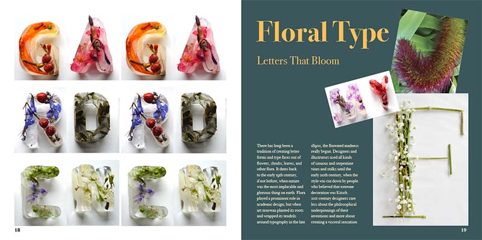
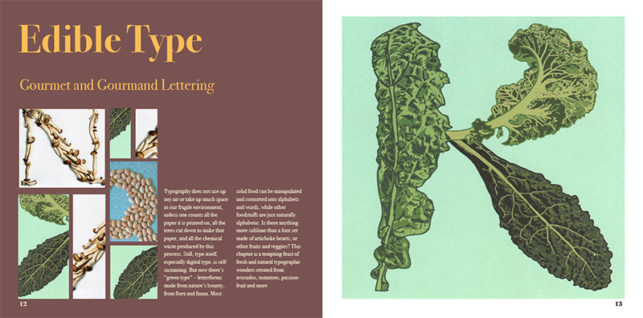

Readers can have a hard time absorbing and understanding text when it is presented in a format that lacks hierarchy and organization. We predict that using a grid system and images and a strong visual concept we can design a book that transforms a difficult-to-absorb document into a more welcoming reading experience.
After two months of thumbnail sketches and design iterations, I created a 28-page book that displays the way one typographic font can be transformed and how the use of a consistent overall typographic and layout system can aid in readability. Transforming a document into a user-friendly and aesthetic reader experience can allow for more engagement with the written content.
